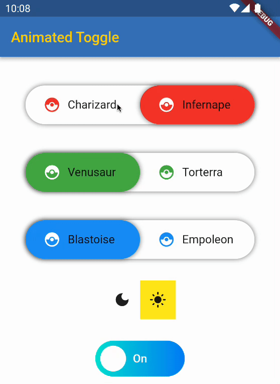

Animated toggle widget

Figma Design that defines this component (only accessible for Iconica developers): https://www.figma.com/file/4WkjwynOz5wFeFBRqTHPeP/Iconica-Design-System?type=design&node-id=356%3A3326&mode=design&t=XulkAJNPQ32ARxWh-1
Features
Setup
To use this package, add flutter_animated_toggle as a dependency in your pubspec.yaml file.
How to use
See the Example Code for an example on how to use this package.
Issues
Please file any issues, bugs or feature request as an issue on our GitHub page. Commercial support is available if you need help with integration with your app or services. You can contact us at support@iconica.nl.
Want to contribute
If you would like to contribute to the plugin (e.g. by improving the documentation, solving a bug or adding a cool new feature), please carefully review our contribution guide and send us your pull request.
Author
This animated_toggle for Flutter is developed by Iconica. You can contact us at support@iconica.nl